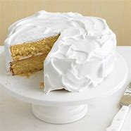

Jay's Most Underated Cake Recipe
This is the best recipe for cake I've ever made. It's
a shame no one would give it the time of day, but now you have
access to it. So please do my recipe justice.

The ingredients needed in this recipe are:
∙ 1 cup of unsalted butter(2 sticks), room temperature,
plus more for pans
∙ 2 1/2 cups all-purpose flour, plus more for pans
∙ 1/2 teaspoon of baking powder
∙ 1/2 teaspoon of baking soda
∙ 2 teaspoons of pure vanilla extract
∙ 1 cup of low-fat buttermilk
And now for the instructions, follow the instructions down below
1. Preheat oven to 350 degrees. Butter and flour two 8-by-2-inch
cake pans, tapping out excess flour. In a medium bowl, whisk flour, baking powder,
baking soda, and salt.
2. In a large bowl, using an electric mixer, beat butter and sugar until
light and fluffy. With mixer on low, beat in eggs and yolks, one at a time. Beat in
vanilla. Alternately beat in flour mixture and buttermilk, beginning and ending with
flour mixture; mix just until combined.
3. Divide batter between pans; smooth tops. Bake until cakes pull away from
sides of pans, 32 to 35 minutes. Let cool in pans 10 minutes. Run a knife around edges of
pans and invert cakes onto a wire rack. Let cool completely.
Place one cake, bottom side up, on a cake stand. Tuck strips of parchment paper
underneath. Using an offset-spatula or table knife, spread top with whipped frosting. Top with
remaining cake; frost top, then sides.
A link to the homepage